Ten AI agents that build software with you: each shows its work and asks you before the choices that matter
AJ BareaRochester Institute of Technology
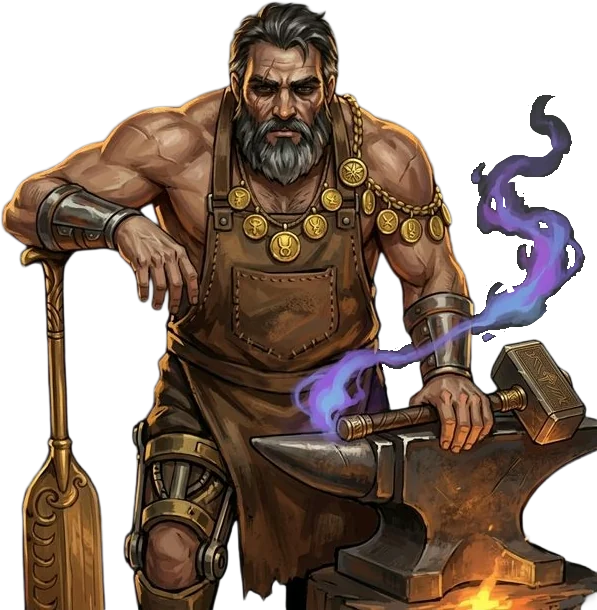
Follow alongajbarea.github.io/talks/
Hephaestus "Metis! Draw up the plans. And no improvising."
Metis analyzing events module...
found 3 models with datetime fields
nested relationships in Attendance and Session
Metis "Should CSV export stream chunked I/O for large files?"
Streaming keeps memory constant but adds about 3 ms a row.
you yes, stream chunked
Metis drafting spec with streaming I/O...
What I didAn open-source team of ten AI agents, each its own server. They plan, code, test, review and commit, and show their reasoning as they go.
Why you should careIf you use a coding agent, you see its choices as it makes them, and you make the ones that matter.
Plan, code, test, review, document: five jobs for one model, and its decisions surface only at the end.
Illustrative: examples of the choices a request like this involves.
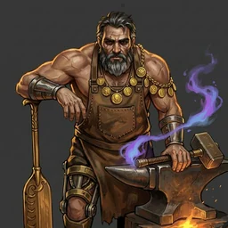
Hephaestusruns the forge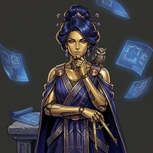
Metisplans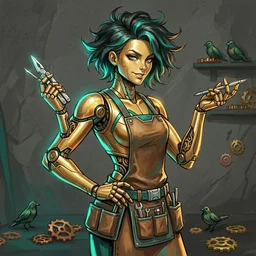
Technecodes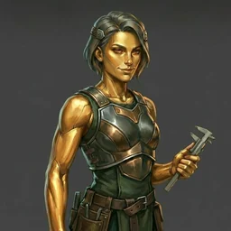
Dokimasiatests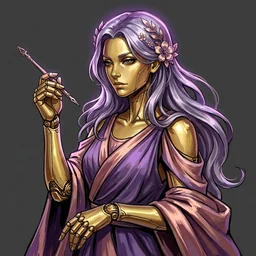
Kallosreviews style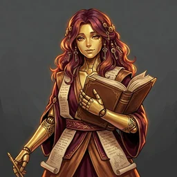
Mnemewrites commit messages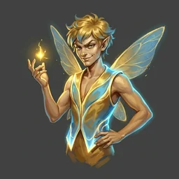
Puckguides you in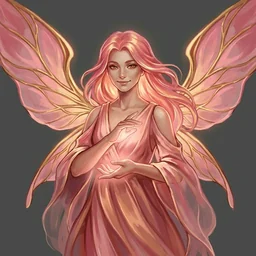
Cupidcoaches the romance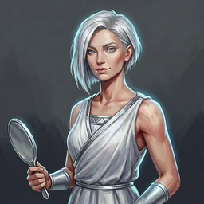
Aidoscatches vague writing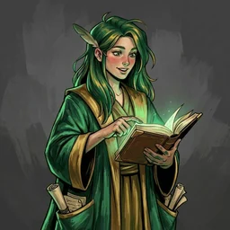
Aletheiachecks citationsHephaestus gives each specialist the whole conversation so far, never a summary.
Project term: the Forge Transcript.
HephaestusPlan + JWT + tests + commit. Light the forge?
yes
MetisShould CSV export support streaming for large files?
A: yes, constant memory, slower start
B: no, faster start, high memory
A
Every agent streams its reasoning as it works.
Both exchanges are from the project's documentation.
A fast command-line session that streams each agent's work as text.
Each agent's portrait, with a voice matched to its personality.
A story game built in Ren'Py, where your rapport with each agent grows.
One back endHephaestus and the specialists, run with Docker
Claude or Google models, or free local models through Ollama
Each agent's steps and timing in Jaeger, with metrics in Prometheus
10 agents
each with one job, each its own server, run with Docker
2 checks
where you decide: before the work starts, and when a real choice comes up
1 record
of the whole conversation, handed to every specialist, never a summary
Still open
I'm glad to take questions.
AJ Barea
PhD student, Rochester Institute of Technology
These slidesajbarea.github.io/talks/
kourai-khryseai
| Protocol | A2A, the open agent-to-agent protocol: each agent is its own HTTP server, so any one can be deployed alone, tested alone or replaced |
|---|---|
| The route | Hephaestus calls one specialist at a time and waits for its result before calling the next |
| Streaming | Each specialist streams its reasoning back as it works; the hosts show it live |
| Tools | MCP for tools and files; A2A only between agents |
| Built with | Python; LiteLLM between the agents and the models; OpenTelemetry for the traces |
From the project's architecture overview and roadmap.
| Providers | Anthropic (default), Google, or free local models through Ollama |
|---|---|
| Tiers | cheap, standard and smart; on Anthropic, cheap is Haiku for every agent |
| A full feature | Six core model calls, about 12,000 tokens in and 8,000 out |
| Rough cost | About $0.05 on the cheap tier, $0.25 to $0.70 on the others (Anthropic) |
| Your own count | /usage prints tokens and dollar cost per agent and model |
From the project's pricing guide; provider rates change.
| Traces | Jaeger: every A2A hop and tool call, with the whole route's timing |
|---|---|
| Metrics | Prometheus: rates and latencies per agent and model |
| Logs | Each agent's live log, and one line per tool call, tagged with the session |
| Open them | make observe opens all three |
From the project's observability guide.